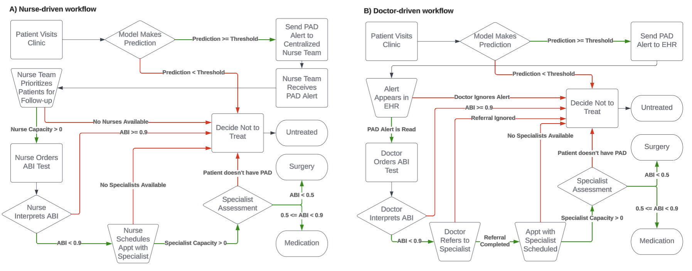
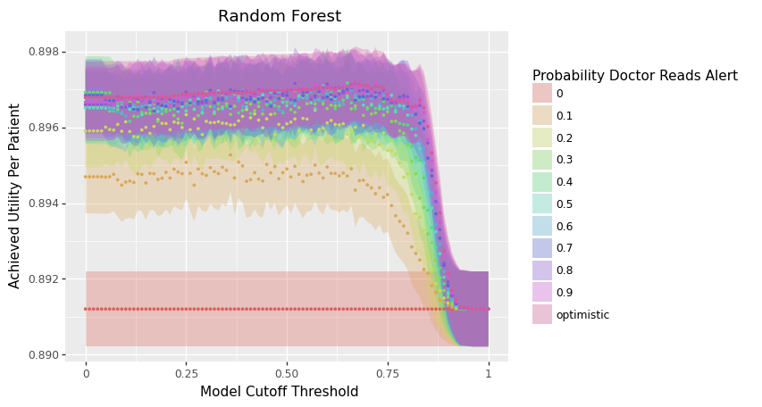
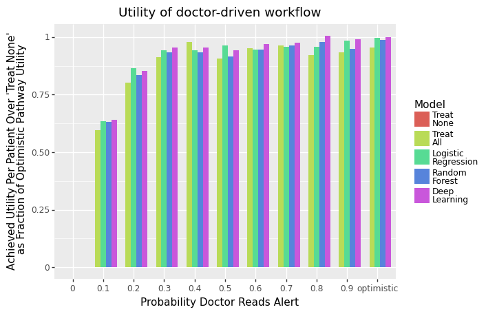
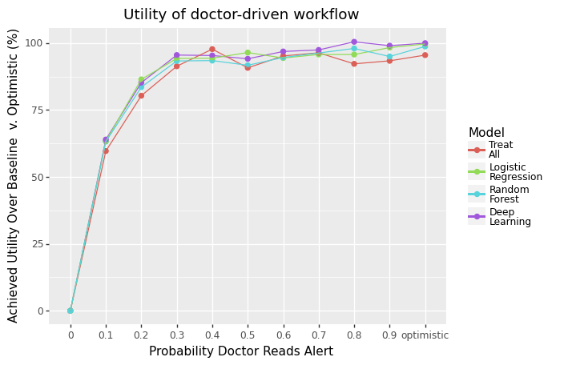

Tutorial (PAD)
In this section, we present a case study of conducting a novel usefulness assessment via APLUS of ML models for the early detection of PAD.
The full .ipynb notebook for this tutorial can be found at this link.
🏥 Clinical Motivation
PAD is a chronic condition which occurs when the arteries in a patient’s limbs are constricted by atherosclerosis, thereby reducing blood flow. A total of 8–12 million people in the US have PAD. Left untreated, PAD is associated with a higher risk of mortality, serious cardiovascular events, and lower quality of life. This costs the US healthcare system over $21 billion annually.
Despite these risks, PAD is often missed by healthcare providers as roughly half of all PAD patients are asymptomatic.
Thus, developing methods for the early detection of PAD can help reduce the burden of PAD on the US healthcare system.
🤖 ML Models
Ghanzouri et al. 2022 proposed three ML models to classify patients for PAD based on EHR data: a deep learning model, a random forest, and a logistic regression with respective AUROCs of 0.96, 0.91 and 0.81. Each model assigns a probabilistic risk score to each visiting patient which indicates their likelihood of having PAD.
We use APLUS to conduct a usefulness assessment on incorporating this model into clinical decision making at Stanford Health Care to quantify the benefits of deploying this model in practice.
👩⚕️ Workflows
{kind=link}

Based on interviews with practitioners, we identified two workflows to consider:
A nurse-driven workflow which assumes the existence of a centralized team of nurses reviewing the PAD model’s predictions for all patients visiting their clinic each day. This nursing staff decides which patients to directly refer to the specialist, thus cutting out any intermediate steps with a non-specialist physician. The main constraints on this workflow are the capacity of the nursing staff and the specialist’s schedule.
A doctor-driven workflow which assumes that the PAD model’s predictions appear as a real-time alert in a patient’s EHR during their visit to the clinic. If the attending physician notices this alert, she can choose to either ignore the alert or act on it. We assume that physicians ignore alerts at random. The main constraints on this workflow are the probability that the attending physician reads the alert (previous studies have shown that up to 96 % of alerts are overridden [54], [55], [56]) and the specialist’s schedule.
In both workflows, we assume the existence of a downstream cardiovascular specialist who evaluates patients after they are referred by a doctor or nurse. We assume that the specialist has a set capacity for how many patients she can see per day. However, once a patient reaches the specialist, we assume that the specialist makes the optimal treatment decision for that patient.
We model 3 possible end outcomes for patients: Untreated, Medication, or Surgery.
An important distinction between the nurse-driven and doctor-driven workflows is that the nurse-driven workflow is centralized whereas the doctor-driven workflow is decentralized. In other words, the nurse-driven workflow batches together all model predictions for each day before patients are chosen for follow-up, while in the doctor-driven workflow each doctor decides whether to act on a PAD alert immediately upon receipt of the alert (independent from the decisions of other doctors). Thus, we consider two possible strategies that the nurses can leverage for processing this batch of predictions: (1) ranked screening, in which the nursing staff follows up with the K patients with the highest PAD risk scores; or (2) thresholded screening, in which a random subset of patients are selected from the batch of predictions whose predicted PAD risk score exceeds some cutoff threshold.
The corresponding YAML workflow specification files are available in the APLUS Github repository.
𝓧 Variables
We now need to define the variables (i.e. parameters) that we will use to simulate our workflow. These knobs can be turned to simulate different workflow settings.
First, let’s define simulation-level variables that will determine how the overall simulation runs.
We need to choose the timestep \(\Delta t\) of the simulation. The simulation runs one timestep at a time, so setting this timestep to the appropriate unit of time is important.
For PAD, the workflow occurs over the span of weeks / months. Thus, we will set the timestep to represent 1 day.
Next, we need to choose the length \(T\) in timesteps of the simulation. We’ll arbitrarily use \(T = 500\) days. Longer values will result in more precise utility estimates, but will also take longer to run.
We assume we have a dataset of \(N\) patients, indexed by \(i = 1, \ldots, N\).
Second, we need to define the individual-level properties of each patient.
Each patient either has PAD (\(y_i = 1\)) or does not (\(y_i = 0\)).
Each patient has an individual-level ABI score \(a_i\).
For patients with PAD, we assume that \(a_i | y_i = 1 \sim \text{Normal}(0.65, 0.15)\).
For patients without PAD, we assume that \(a_i | y_i = 0 \sim \text{Normal}(1.09, 0.11)\).
These numbers were based on a literature review of the ABI score distribution in patients with and without PAD.
Third, let’s define the utility values for each of the three workflow outcomes (Untreated, Medication, Surgery).
For example, Untreated is the best option for patients without PAD but has the largest cost for patients with PAD. Medication is the ideal outcome for patients with moderate PAD but is undesirable for patients without PAD. Surgery is the costliest outcome for all patients, but the relatively best option for patients with severe PAD.
We combined clinician input with utility estimates from Itoga et al. 2018 to define the utilities associated with the end outcomes of each workflow in terms of a multiplier on remaining years living to reflect quality-adjustment on lifespan. Given that a healthy patient with no PAD has a baseline utility of 1, the utilities for different combinations of PAD severity and treatment are shown in the table below:
Untreated |
Medication |
Surgery |
|
|---|---|---|---|
No PAD |
1.0 |
0.95 |
0.7 |
Moderate PAD |
0.85 |
0.9 |
N/A |
Severe PAD |
0.6 |
N/A |
0.68 |
Fourth, we need to define the capacity constraints on our workflow.
Both workflows have a constraint on the number of patients that the specialist can see per day, which we define as \(c\). We assume that \(c = 2\) and that it decrements by 1 with each patient the specialist sees, but reset to 2 at the end of each timestep.
For the nurse-driven workflow, we have the following specific constraint…
\(k\) = Number of patients per day that the centralized nursing team can follow-up with for an ABI test
For the doctor-driven workflow, we have the following specific constraint…
\(p\) = Probability that a PAD alert is read
We will vary the values of \(k\), \(p\), and \(c\) in our script to simulate different levels of capacity and quantify the utility achieved by the ML models under each.
💽 Data
We acquired a dataset of 4,452 patients who had both ground-truth labels of PAD diagnosis and risk score predictions from all three ML models developed in Ghanzouri et al. 2022.
We simulated 500 consecutive days of patient visits. We sampled \(k \sim \text{Poisson}(35)\) to determine the number of patients visiting on a given day, then sampled \(k\) patients with replacement from our dataset.
🔧 Creating the APLUS Config
Let’s now create our config files, one for each workflow. We’ll walk through creating the doctor-driven workflow YAML below, but an example of the full nursing workflow can be found here: https://github.com/som-shahlab/aplusml/blob/main/workflows/pad_nurse.yaml
1. Patient Properties CSV
First, we need to create a CSV file that contains individual-level properties associated with each patient that will be run through our simulation. Each row in the CSV is a unique patient, and each column is a property. Properties can be anything – e.g. demographic information, model predictions, clinical measurements, etc.
This file can contain any columns. In our case, we have the following columns:
id: The unique identifier for the patient.y: The ground truth PAD status of the patient.y_hat_dl: The predicted PAD risk score from the deep learning model.y_hat_rf: The predicted PAD risk score from the random forest model.y_hat_lr: The predicted PAD risk score from the logistic regression model.abi_test_pred: The predicted ABI score from the ABI test.random_resource_priority: A random number that we will use to sort patients when prioritizing them for access to a finite resource.
Here is an excerpt from our properties CSV (which we’ll store in ./patient_properties.csv):
id,y,y_hat_dl,y_hat_rf,y_hat_lr,abi_test_pred,random_resource_priority
1,0,0.95,0.9,0.85,0.9,0.1
2,1,0.85,0.8,0.75,0.8,0.2
3,0,0.75,0.7,0.65,0.7,0.3
2. Metadata Section of Config YAML
First, we define the Metadata section for our workflow. We need to provide the following metadata for our simulation:
name: Name of the workflow.
path_to_properties: Path to the Patient Properties CSV file where each row is a patient, and each column is a property of that patient.
properties_col_for_patient_id: The name of the column within the properties CSV file that contains the patient IDs.
patient_sort_preference_property: The name of the the variable that we will use to sort patients when prioritizing them to access a finite resource. Use theis_ascendingflag to specify whether the variable should be sorted in ascending or descending order.
For our doctor-driven workflow, our config YAML file’s Metadata section looks like this:
metadata:
name: "PAD (Doctor)"
path_to_properties: "./patient_properties.csv"
properties_col_for_patient_id: "id"
patient_sort_preference_property:
variable: random_resource_priority
is_ascending: False
3. Parameters Section of Config YAML
Second, we need to define the Variables section of our config YAML file. This section contains the parameters that we will use to simulate our workflow.
Let’s start by defining the utility values for each possible outcome. Let’s define a variable called qaly to be a dictionary that maps each possible outcome to a utility value.
variables:
# Utility values
qaly:
value: {
'YES_pad__UNTREATED__needs_surgery' : 0.6,
'YES_pad__YES_surgery' : 0.68,
'NO_pad__YES_surgery' : 0.7,
'YES_pad__UNTREATED__needs_medication' : 0.85,
'YES_pad__YES_medication' : 0.9,
'NO_pad__YES_medication' : 0.95,
'NO_pad__UNTREATED' : 1,
}
Next, we need to define the parameters that we will use to simulate our workflow.
Because our model outputs probabilistic predictions, we need to define a threshold above which we flag the patient as having PAD. By defining this threshold as a variable, we can easily change it in our simulation to evaluate the model’s utility at different thresholds.
Here, we use a variable with type: scalar.
This tells APLUS that the value of this variable is independent of the patient (i.e. it will be the same for all patients).
We can set value to any Python expression.
We’ll set it to 0.5 for now, but we can change this programatically in our simulation.
variables:
# ... existing variables ...
# Model
model_threshold:
type: scalar
value: 0.5
The default type for a variable is scalar, so we can equivalently write this variable as:
variables:
# ... existing variables ...
# Model
model_threshold:
value: 0.5
We’ll next add the patient properties from the Patient Properties CSV into our simulation.
We’ll start with the columns that contain the model predictions and ground truth labels.
Here, we use a variable with type: property.
This tells APLUS that for each patient, we will set the value of this variable to the value of that patient’s row in the CSV column named column.
Typically, the name of the variable will be the same as the name of the column in the CSV, as shown below.
variables:
# ... existing variables ...
# Patient properties
y:
type: property
column: y
y_hat_dl:
type: property
column: y_hat_dl
y_hat_rf:
type: property
column: y_hat_rf
y_hat_lr:
type: property
column: y_hat_lr
We’ll next add a column that contains a random nonce that will be used to deterministically (but randomly) prioritize patients for limited resources.
variables:
# ... existing variables ...
# Patient properties
random_resource_priority: # Random nonce used to deterministically (but randomly) prioritize patients for limited resources
type: property
column: random_resource_priority
We’ll next consider the ABI test. Recall from our Patient Properties CSV that we have a column called abi_test_pred.
This column contains the predicted ABI score for each patient.
This will give every patient a property called abi_test_pred that contains the ABI score contained in their row’s abi_test_pred column.
variables:
# ... existing variables ...
# ABI test
abi_test_pred:
type: property
column: abi_test_pred
Given this ABI test result, we need to decide how it impacts the patient’s care.
We’ll define variables to control the thresholds for each possible decision based on the ABI test result.
Because these will thresholds will be the same across patients, we will use variables of type: scalar to represent them.
variables:
# ... existing variables ...
# ABI test
abi_test_threshold:
value: 0.9 # If abi_test_pred < value, then patient tested positive for PAD
abi_test_specialist_recommend_surgery_threshold:
value: 0.45 # If abi_test_pred < value, then a specialist will recommend surgery for this patient
abi_test_untreated_needs_surgery_threshold:
value: 0.55 # If abi_test_pred < value, then this patient will eventually need surgery for their PAD if they aren't immediately put on medication/surgery
abi_test_treat_immediately_threshold:
value: 0.8 # If abi_test_pred > value, then doctor can treat PAD with medication
Finally, we’ll add variables for tracking the progress of the simulation over time.
Here, we use a variable with type: simulation. This tells APLUS that these variables are special variables provided by the simulation engine.
Currently, the only supported simulation variables are time_already_in_sim and sim_current_timestep.
The time_already_in_sim variable contains the number of timesteps that have elapsed since the specific patient accessing this property started their workflow.
The sim_current_timestep variable contains the number of timesteps that have elapsed since the simulation started.
variables:
# ... existing variables ...
# Simulation time
time_already_in_sim:
type: simulation
sim_current_timestep:
type: simulation
Let’s now add variables for representing the constraints on our workflow.
The first constraint that we need to model is the specialist’s capacity. We’ll define a few variables to model this.
First, we’ll define the number of days that the specialist is in office as an array of integers called specialist_days_in_office.
We’ll have 0 represent Sunday and 6 represent Saturday.
variables:
# ... existing variables ...
# Specialist
specialist_days_in_office:
value: [1, 3, 5] # Specialist can only see patients on a MWF
Second, we’ll define the number of patients that the specialist can see per day as specialist_capacity.
Here, we use a variable with type: resource.
This tells APLUS that this variable can increase/decrease over time.
We need to specify the following parameters for the resource:
init_amount: The initial amount of the resource when the simulation starts.
max_amount: The maximum amount of the resource. Any refill attempts that would increase the resource above this amount will simply set the resource to this value.
refill_amount: The amount of the resource to add each time it is refilled.
refill_duration: The number of timesteps between refills.
variables:
# ... existing variables ...
# Specialist
specialist_capacity:
type: resource
init_amount: 2 # Specialist can see 2 patients her first day
max_amount: 2 # Specialist can only see 2 patients per day
refill_duration: 1 # Specialist "refills" their capacity at the end of each day
refill_amount: 2 # Every time the specialist refills their capacity, they change it by +2
Third, we’ll define the number of days that a patient will be willing to wait to see the specialist (before giving up and ending in the “No Treatment” state) as schedule_specialist_appt_time_out.
variables:
# ... existing variables ...
# Specialist
schedule_specialist_appt_time_out:
value: 30 # Wait 30 days to find time with specialist, then give up
The second constraint that we need to model is the probability that a PAD alert is read by the physician.
We’ll define a variable called prob_pad_alert_is_read to represent this. Note that this is uniform across all patients and doctors.
variables:
# ... existing variables ...
# Transition probs
prob_pad_alert_is_read:
value: 0.8
The third constraint that we need to model is the probability that an ABI test is ordered by the physician for a patient.
We’ll define a variable called prob_doctor_orders_abi to represent this. Again, note that this is uniform across all patients and doctors.
variables:
# ... existing variables ...
# Transition probs
prob_doctor_orders_abi:
value: 0.95
The fourth constraint that we need to model is the probability that the patient successfully schedules a follow-up appointment with the specialist.
We’ll define a variable called prob_specialist_follow_up_completed to represent this.
variables:
# ... existing variables ...
# Transition probs
prob_specialist_follow_up_completed:
value: 0.8
And that’s it! We’ve now defined all of the variables we need to control our simulation.
4. States Section of Config YAML
Now that we’ve defined all of the variables that we need, we can define the states of our workflow.
First, we need to define the start state. Only one state can be the start state, and it must be named start.
Each start state must have the following fields:
* type: start
* label: The label of the state.
* transitions: A list of transitions that can be made from the current state. Each transition must have a dest field that specifies the state to transition to. If only one transition is specified, it will always be taken.
For PAD, our patients will immediately be admitted into the clinic, so our start state will have the following transition:
states:
start:
type: start
label: "Start"
transitions:
- dest: admit
Let’s now define the admit state. We will immediately make a model prediction for each patient who visits the clinic, so let’s immediately transition to the model_pred state.
states:
# ... existing states ...
admit:
label: "Patient Visits Clinic"
transitions:
- dest: model_pred
Let’s now define the model_pred state.
This state will make a model prediction for each patient who visits the clinic, then branch to either the send_pad_alert or no_treatment state depending on the prediction.
To represent a conditional transition, we add an if field to the send_pad_alert transition.
The if field takes a Python expression that evaluates to a boolean. If the expression evaluates to True, then the transition will be taken.
In this case, the expression is y_hat_dl >= model_threshold will evaluate to True if the patient’s predicted PAD risk score (y_hat_dl) is greater than or equal to the model threshold (model_threshold) we’ve chosen.
This expression is evaluated in the context of the patient’s properties, so you can use any of the variables defined in the Variables section of the config. In this case, we’re using the y_hat_dl and model_threshold variables.
Note that the no_treatment transition does not have an if field; it will be taken by default if the send_pad_alert transition is not taken.
states:
# ... existing states ...
model_pred:
label: "Make Model Prediction"
transitions:
- dest: send_pad_alert
if: y_hat_dl >= model_threshold
- dest: no_treatment
no_treatment:
label: "Decide Not to Treat"
transitions:
- dest: untreated
Let’s now define the states that occur when a PAD alert is sent to the EHR. First, we define the send_pad_alert state to represent the alert being sent to the EHR. This state leads to the doctor_presented_with_alert state, which represents the alert appearing in the EHR.
states:
# ... existing states ...
send_pad_alert:
label: "Send PAD Alert to EHR"
transitions:
- dest: doctor_presented_with_alert
doctor_presented_with_alert:
label: "Alert Appears in EHR"
transitions:
- dest: doctor_reads_alert
prob: prob_pad_alert_is_read
- dest: no_treatment
As shown above, the doctor_presented_with_alert state has a conditional transition. This time, however, the conditional transition is based on a simple probability rather than a Python expression.
Thus, we use the prob field to specify the probability of transitioning to the doctor_reads_alert state.
If the probability is not met, then the transition to the no_treatment state will be taken by default.
Let’s now define the states that occur when the doctor reads the alert. This state will order an ABI test for the patient if the doctor reads the alert, then branch to either the order_abi or no_treatment state based on a probability defined in the Variables section of the config.
states:
# ... existing states ...
doctor_reads_alert:
label: "Doctor Reads Alert"
transitions:
- dest: order_abi
prob: prob_doctor_orders_abi
- dest: no_treatment
Let’s now define the states that occur when the doctor orders an ABI test. Those are shown below, which include a mix of probabilitistic and expression-based conditional transitions.
Note that the if fields can support arbitrarily complicated Python expressions (e.g. (abi_test_treat_immediately_threshold < abi_test_pred) and (abi_test_pred <= abi_test_threshold)).
states:
# ... existing states ...
order_abi:
label: "Doctor Orders ABI Test"
transitions:
- dest: doctor_interprets_abi_result
doctor_interprets_abi_result:
label: "Doctor Interprets ABI"
transitions:
- dest: doctor_treats_immediately
if: (abi_test_treat_immediately_threshold < abi_test_pred) and (abi_test_pred <= abi_test_threshold)
- dest: refer_to_specialist
if: abi_test_pred < abi_test_threshold
- dest: no_treatment
doctor_treats_immediately:
label: "Doctor Treats Immediately"
transitions:
- dest: medication
refer_to_specialist:
label: "Doctor Refers to Specialist"
transitions:
- dest: schedule_specialist_appt
prob: prob_specialist_follow_up_completed
- dest: no_treatment
Let’s now define the states that occur when the doctor schedules a follow-up appointment with the specialist. This state will schedule an appointment with the specialist if the patient has capacity and the current day is a specialist day, then branch to either the specialist_review or no_treatment state depending on the result of the ABI test.
states:
# ... existing states ...
schedule_specialist_appt:
label: "Schedule Appt with Specialist"
transitions:
- dest: specialist_review
if: (specialist_capacity > 0) and (sim_current_timestep % 7 in specialist_days_in_office)
resource_deltas:
specialist_capacity: -1
- dest: no_treatment
if: time_already_in_sim >= schedule_specialist_appt_time_out - 1
- dest: schedule_specialist_appt
duration: 1
specialist_review:
label: "Specialist Assessment"
transitions:
- dest: no_treatment
if: y == 0
- dest: surgery
if: abi_test_pred < abi_test_specialist_recommend_surgery_threshold
- dest: medication
Finally, let’s define the terminal states in which a patient can end the workflow. For each terminal state, we must specify the following fields:
* type: end
* label: The label of the state.
And we can optionally specify the following fields:
* utilities: A list of utility values for the state. Each utility value must have a value field that specifies the utility value (this can be a variable), and a unit field that specifies the unit of the utility value. It can also optionally have an if field that specifies the condition under which the utility value is used.
Let’s start with the medication state, which means the patient is treated with medication. We have two situations to model:
The patient has PAD (i.e.
y == 1) and is treated with medication. The utility for this is given by the variableqaly["YES_pad__YES_medication"].The patient does not have PAD (i.e.
y == 0) and is treated with medication. The utility for this is given by the variableqaly["NO_pad__YES_medication"].
Putting this together, we get the following definition for the medication state:
states:
# ... existing states ...
medication:
type: end
label: "Medication"
utilities:
- value: qaly["YES_pad__YES_medication"]
if: y == 1
unit: qaly
- value: qaly["NO_pad__YES_medication"]
if: y == 0
unit: qaly
We can repeat this process for the surgery and untreated states.
states:
# ... existing states ...
surgery:
type: end
label: "Surgery"
utilities:
- value: qaly["YES_pad__YES_surgery"]
if: y == 1
unit: qaly
- value: qaly["NO_pad__YES_surgery"]
if: y == 0
unit: qaly
untreated:
label: "Untreated"
type: end
utilities:
- value: qaly["YES_pad__UNTREATED__needs_surgery"]
if: y == 1 and (abi_test_pred < abi_test_untreated_needs_surgery_threshold)
unit: qaly
- value: qaly["YES_pad__UNTREATED__needs_medication"]
if: y == 1 and not (abi_test_pred < abi_test_untreated_needs_surgery_threshold)
unit: qaly
- value: qaly["NO_pad__UNTREATED"]
if: y == 0
unit: qaly
And we’re done! We’ve now defined the entire doctor-driven workflow for our simulation.
The full config file is shown below for reference.
metadata:
name: "PAD (Doctor)"
path_to_properties: "input/pad/properties.csv"
patient_sort_preference_property:
variable: random_resource_priority
is_ascending: False
variables:
# Model
model_threshold:
value: 0.5
# ABI test
abi_test_threshold:
value: 0.9 # If abi_test_pred < X, then patient tested positive for PAD
abi_test_specialist_recommend_surgery_threshold:
value: 0.45 # If abi_test_pred < X, then a specialist will recommend surgery for this patient
abi_test_untreated_needs_surgery_threshold:
value: 0.55 # If abi_test_pred < X, then this patient will eventually need surgery for their PAD if they aren't immediately put on medication/surgery
abi_test_pred:
type: property
column: abi_test_pred
abi_test_treat_immediately_threshold:
value: 0.8 # If abi_test_pred > X, then doctor can treat PAD with medication
# Transition probs
prob_pad_alert_is_read:
value: 0.8
prob_doctor_orders_abi:
value: 0.95
prob_specialist_follow_up_completed:
value: 0.8
# Specialist
schedule_specialist_appt_time_out:
value: 30 # Wait 30 days to find time with specialist, then give up
specialist_days_in_office:
value: [1, 3, 5] # Specialist can only see patients on a MWF
specialist_capacity:
type: resource
init_amount: 2
max_amount: 2 # Specialist can only see 2 patients per day
refill_amount: 2
refill_duration: 1
# Patient properties
y:
type: property
column: y
y_hat_dl:
type: property
column: y_hat_dl
y_hat_rf:
type: property
column: y_hat_rf
y_hat_lr:
type: property
column: y_hat_lr
random_resource_priority: # Random nonce used to deterministically (but randomly) prioritize patients for limited resources
type: property
column: random_resource_priority
time_already_in_sim:
type: simulation
sim_current_timestep:
type: simulation
# Utilities
qaly:
value: {
'YES_pad__UNTREATED__needs_surgery' : 0.6,
'YES_pad__YES_surgery' : 0.68,
'NO_pad__YES_surgery' : 0.7,
'YES_pad__UNTREATED__needs_medication' : 0.85,
'YES_pad__YES_medication' : 0.9,
'NO_pad__YES_medication' : 0.95,
'NO_pad__UNTREATED' : 1,
}
states:
start:
type: start
label: "Start"
transitions:
- dest: admit
admit:
label: "Patient Visits Clinic"
transitions:
- dest: model_pred
model_pred:
label: "Make Model Prediction"
transitions:
- dest: send_pad_alert
if: y_hat_dl >= model_threshold
- dest: no_treatment
send_pad_alert:
label: "Send PAD Alert to EHR"
transitions:
- dest: doctor_presented_with_alert
doctor_presented_with_alert:
label: "Alert Appears in EHR"
transitions:
- dest: doctor_reads_alert
prob: prob_pad_alert_is_read
- dest: no_treatment
doctor_reads_alert:
label: "Doctor Reads Alert"
transitions:
- dest: order_abi
prob: prob_doctor_orders_abi
- dest: no_treatment
order_abi:
label: "Doctor Orders ABI Test"
transitions:
- dest: doctor_interprets_abi_result
doctor_interprets_abi_result:
label: "Doctor Interprets ABI"
transitions:
- dest: doctor_treats_immediately
if: (abi_test_treat_immediately_threshold < abi_test_pred) and (abi_test_pred <= abi_test_threshold)
- dest: refer_to_specialist
if: abi_test_pred < abi_test_threshold
- dest: no_treatment
doctor_treats_immediately:
label: "Doctor Treats Immediately"
transitions:
- dest: medication
refer_to_specialist:
label: "Doctor Refers to Specialist"
transitions:
- dest: schedule_specialist_appt
prob: prob_specialist_follow_up_completed
- dest: no_treatment
schedule_specialist_appt:
label: "Schedule Appt with Specialist"
transitions:
- dest: specialist_review
if: (specialist_capacity > 0) and (sim_current_timestep % 7 in specialist_days_in_office)
resource_deltas:
specialist_capacity: -1
- dest: no_treatment
if: time_already_in_sim >= schedule_specialist_appt_time_out - 1
- dest: schedule_specialist_appt
duration: 1
specialist_review:
label: "Specialist Assessment"
transitions:
- dest: no_treatment
if: y == 0
- dest: surgery
if: abi_test_pred < abi_test_specialist_recommend_surgery_threshold
- dest: medication
no_treatment:
label: "Decide Not to Treat"
transitions:
- dest: untreated
medication:
type: end
label: "Medication"
utilities:
- value: qaly["YES_pad__YES_medication"]
if: y == 1
unit: qaly
- value: qaly["NO_pad__YES_medication"]
if: y == 0
unit: qaly
surgery:
type: end
label: "Surgery"
utilities:
- value: qaly["YES_pad__YES_surgery"]
if: y == 1
unit: qaly
- value: qaly["NO_pad__YES_surgery"]
if: y == 0
unit: qaly
untreated:
label: "Untreated"
type: end
utilities:
- value: qaly["YES_pad__UNTREATED__needs_surgery"]
if: y == 1 and (abi_test_pred < abi_test_untreated_needs_surgery_threshold)
unit: qaly
- value: qaly["YES_pad__UNTREATED__needs_medication"]
if: y == 1 and not (abi_test_pred < abi_test_untreated_needs_surgery_threshold)
unit: qaly
- value: qaly["NO_pad__UNTREATED"]
if: y == 0
unit: qaly
And the config file for the nurse-driven workflow can be found at this link: https://github.com/som-shahlab/aplusml/blob/main/workflows/pad_nurse.yaml
📏 Baselines
We evaluated each PAD model’s utility relative to three baselines:
Treat None – We simply predict a PAD risk score of 0 for all patients;
Treat All – We predict a PAD risk score of 1 for all patients;
Optimistic – There were no workflow constraints or resource limits
Concretely, we measured each model’s expected utility achieved per patient above the Treat None baseline as a percentage of the utility achieved under the Optimistic scenario. In other words, we measured how much of the total possible utility gained from using a model was actually achieved under each workflow’s constraints, relative to simply doing nothing.
📊 Run Simulation
Let’s now write some code to run the simulation and plot the results!
First, load the necessary libraries and define the paths to the files we need.
import os
import copy
import pickle
import numpy as np
from matplotlib import cm
import matplotlib.patches as mpatches
import matplotlib.pyplot as plt
import pandas as pd
from typing import List
import aplusml
import pad
# Patient properties + model predictions
PATH_TO_OUTPUT_FOLDER = '../output/'
PATH_TO_PATIENT_PROPERTIES = '../input/synthetic_pad_inputs.csv'
os.makedirs(PATH_TO_OUTPUT_FOLDER, exist_ok=True)
# Workflow config YAML file
PATH_TO_DOCTOR_YAML = '../workflows/pad_doctor.yaml'
Next, set the models and thresholds we want to test.
# Model settings
THRESHOLDS = np.linspace(0, 1, 101) # Test model thresholds from 0 to 1
MODELS = ['dl', 'rf', 'lr'] # Test the three models
Next, load the doctor-driven workflow config YAML file and display the workflow diagram.
# Load nurse-driven workflow
simulation = aplusml.Simulation.create_from_yaml(PATH_TO_DOCTOR_YAML, PATH_TO_PATIENT_PROPERTIES)
simulation.draw_workflow_diagram(figsize=(30,30))
Finally, define some helper functions to help us run the simulation…
# Helper function to run the simulation and plot the results
def run_test(patients: List[aplusml.Patient],
labels: List[str],
settings: List[dict],
MODELS: List[str],
THRESHOLDS: List[float],
PATH_TO_YAML: str,
PATH_TO_PROPERTIES: str,
is_patient_sort_by_y_hat: bool = False,
func_setup_optimistic: Callable = None,
is_use_multi_processing: bool = True) -> Tuple[dict, dict]:
model_2_result = {} # [key] = model name, [value] = df
for m in MODELS:
simulation = load_simulation_for_model(PATH_TO_YAML,
PATH_TO_PROPERTIES,
m,
is_patient_sort_by_y_hat=is_patient_sort_by_y_hat,
func_setup_optimistic=func_setup_optimistic)
df_result = aplusml.run_test(simulation,
patients,
labels + [f"optimistic"], settings + [{}],
pd.DataFrame(),
lambda sim, patients, label: aplusml.test_diff_thresholds(sim, patients, THRESHOLDS, utility_unit='qaly'),
is_use_multi_processing=is_use_multi_processing)
model_2_result[m] = df_result.copy()
# Save Treat All / None / Perfect baselines under optimistic conditions
baselines = [
# Treat All - treat everyone as if y_hat == 1
{ 'label' : 'all', 'if_' : True },
# Treat None - treat everyone as if y_hat == 0
{ 'label' : 'none', 'if_' : False },
# Treat Perfect - treat everyone as if y_hat == y
{ 'label' : 'perfect', 'if_' : 'y == 1' },
]
baseline_2_result = {}
for b in baselines:
label = b['label']
if_ = b['if_']
# This is INDEPENDENT of any model (MODELS[0] used for simplicity here)
simulation = load_simulation_for_model(PATH_TO_YAML, PATH_TO_PROPERTIES, MODELS[0], is_patient_sort_by_y_hat=False, func_setup_optimistic=func_setup_optimistic)
simulation.states['model_pred'].transitions[0].if_ = if_
# This only has one threshold (at 0) since this is independent of the model (and thus the threshold of the model)
df_result = aplusml.run_test(simulation, patients,
labels + [f"optimistic"], settings + [{}],
pd.DataFrame(),
lambda sim, patients, label: aplusml.test_diff_thresholds(sim, patients, [0], utility_unit='qaly'),
is_use_multi_processing=is_use_multi_processing)
baseline_2_result[label] = df_result.copy()
return model_2_result, baseline_2_result
Add some functions to help us plot the results…
def show_ribbon_plots(model_2_result, label_sort_order, label_title):
p1 = aplusml.plot.plot_mean_utility_v_threshold('Deep Learning', model_2_result['dl'],
label_sort_order=label_sort_order,
label_title=label_title)
p2 = aplusml.plot.plot_mean_utility_v_threshold('Random Forest', model_2_result['rf'],
label_sort_order=label_sort_order,
label_title=label_title)
p3 = aplusml.plot.plot_mean_utility_v_threshold('Logistic Regression', model_2_result['lr'],
label_sort_order=label_sort_order,
label_title=label_title)
print(p1)
print(p2)
print(p3)
def show_dodged_bar_mean_utility_plot(title: str, df_, label_sort_order, label_title, is_percent_of_optimistic):
p = aplusml.plot.plot_dodged_bar_mean_utilities(title,
df_,
label_sort_order=label_sort_order,
color_sort_order=[
'none', 'all', 'lr', 'rf', 'dl', ],
color_names=[
'Treat\nNone', 'Treat\nAll', 'Logistic\nRegression', 'Random\nForest', 'Deep\nLearning'
],
is_percent_of_optimistic=is_percent_of_optimistic,
x_label=label_title)
print(p)
def show_line_mean_utility_plot(title: str, df_, label_sort_order, label_title, is_percent_of_optimistic):
df_['group'] = df_['color']
p = aplusml.plot.plot_line_mean_utilities(title,
df_,
group_sort_order=None,
shape_sort_order=None,
color_title='',
shape_title='',
label_sort_order=label_sort_order,
groups_to_drop=['none', ],
color_sort_order=['all', 'lr', 'rf', 'dl', ],
color_names=[
'Treat\nAll', 'Logistic\nRegression', 'Random\nForest', 'Deep\nLearning'
],
is_percent_of_optimistic=is_percent_of_optimistic,
x_label=label_title)
print(p)
def show_plots(title, model_2_result, df_, label_sort_order, label_title,
is_show_ribbon_plot: bool = True,
is_show_dodged_bar_plot: bool = True,
is_show_line_plot: bool = True):
# Ribbon plot
if is_show_ribbon_plot:
show_ribbon_plots(model_2_result, label_sort_order, label_title)
# Dodged bar mean utility plot
if is_show_dodged_bar_plot:
show_dodged_bar_mean_utility_plot(title, df_, label_sort_order, label_title, is_percent_of_optimistic=1)
# Line mean utility plot
if is_show_line_plot:
show_line_mean_utility_plot(title, df_, label_sort_order, label_title, is_percent_of_optimistic=1)
# Helper function to plot the results
def plot_helper(model_2_result: dict,
baseline_2_result: dict,
threshold: float = None) -> pd.DataFrame:
"""Convert `model_2_result` and `baseline_2_result` dicts into unified dfs
If `threshold` is not specified, choose `threshold` that achieves max `mean_utility`
"""
plot_avg_utilities = []
for m, df in model_2_result.items():
for label in df['label'].unique():
if threshold:
y = df[(df['label'] == label) & (df['threshold'] == threshold)]['mean_utility'].values[0]
y_sem = df[(df['label'] == label) & (df['threshold'] == threshold)]['sem_utility'].values[0]
else:
max_idx = df[df['label'] == label]['mean_utility'].argmax()
y = df[df['label'] == label].iloc[max_idx]['mean_utility']
y_sem = df[df['label'] == label].iloc[max_idx]['sem_utility']
plot_avg_utilities.append({
'label' : label,
'y' : y,
'y_sem' : y_sem,
'model' : m,
})
for m, df in baseline_2_result.items():
plot_avg_utilities += [{
'label' : row['label'],
'y' : row['mean_utility'],
'y_sem' : 0,
'model' : m,
} for idx, row in df.iterrows() ]
df_avg_utilities = pd.DataFrame(plot_avg_utilities)
return df_avg_utilities
Finally, define a function to help us run the simulation…
# Run the simulation
def simulate_doctor_workflow(patients: List[aplusml.Patient],
values: list,
specialist_capacity: int = None,
is_ranked_screening: bool = True,
path_to_yaml: str = None,
is_show_ribbon_plot: bool = True,
is_show_dodged_bar_plot: bool = True,
is_show_line_plot: bool = True):
settings = [{
'prob_pad_alert_is_read': {
'type': 'scalar',
'value': x,
},
'specialist_capacity': {
'type': 'resource',
'init_amount': specialist_capacity if specialist_capacity else 1e5,
'max_amount': specialist_capacity if specialist_capacity else 1e5,
'refill_amount': specialist_capacity if specialist_capacity else 1e5,
'refill_duration': 1,
},
} for x in values]
# Run the simulation
labels = [f"{x}" for x in values]
model_2_result, baseline_2_result = run_test(patients,
labels,
settings,
MODELS,
THRESHOLDS,
path_to_yaml,
PATH_TO_PATIENT_PROPERTIES,
is_patient_sort_by_y_hat=is_ranked_screening,
func_setup_optimistic=func_setup_optimistic)
# Plotting constants
df_ = plot_helper(model_2_result, {
'all': baseline_2_result['all'],
'none': baseline_2_result['none']
}, threshold=0.5).rename(columns={'model': 'color'})
# Use prob=1 as the 'optimistic' case
df_ = df_[df_['label'] != 'optimistic']
df_.loc[df_['label'] == '1', 'label'] = 'optimistic'
label_sort_order: list[str] = [ str(x) for x in df_['label'].unique() ]
label_title: str = 'Probability Doctor Reads Alert'
for m in MODELS:
model_2_result[m] = model_2_result[m][model_2_result[m]['label'] != 'optimistic']
model_2_result[m].loc[model_2_result[m]['label'] == '1', 'label'] = 'optimistic'
show_plots('Utility of doctor-driven workflow', model_2_result, df_, label_sort_order, label_title,
is_show_ribbon_plot = is_show_ribbon_plot,
is_show_dodged_bar_plot = is_show_dodged_bar_plot,
is_show_line_plot = is_show_line_plot)
And finally run our simulation across all the different doctor-driven workflow constraints we want to test!
# Run simulation
values = [0, .1, .2, .3, .4, .5, .6, .7, .8, .9, 1, ]
for specialist_capacity in [None, 2, 5]:
print(f"==== Thresholded' + {'Specialist Unlimited' if specialist_capacity is None else f'Specialist Cap ({specialist_capacity})'} ====")
simulate_doctor_workflow(copy.deepcopy(all_patients),
values,
specialist_capacity=specialist_capacity,
is_ranked_screening=False,
path_to_yaml=PATH_TO_DOCTOR_YAML)
You should see plots like the following:
{kind=link}

{kind=link}

{kind=link}
